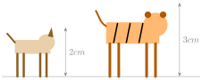
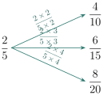
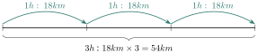
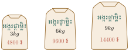

- ប្រៀបធៀបបរិមាណពីរដោយផលធៀប
- បកស្រាយផលធៀបដោយអត្រា
- ដោះស្រាយចំណោទតាមសមាមាត្រស្របនិងច្រាស ។
1. ផលធៀបនៃបរិមាណពីរ
គេប្រៀបធៀបកម្ពស់សត្វឆ្កែនិងសត្វខ្លា ។ ការប្រៀបធៀបបរិមាណទាំងពីរនេះ \(\displaystyle 2cm\) លើ \(\displaystyle 3cm\) អាចសរសេរជាទម្រង់ 2:3 អានថា " ពីរលើបី " ។
ផលធៀបនេះគេអាចសរសេរជាប្រភាគ \(\displaystyle \frac{2}{3}\) ។
ដូចនេះគេអាចប្រៀបធៀបបរិមាណពីរដែលមានឯកតាដូចគ្នា ។

ជាទូទៅ ផលធៀបនៃ \(\displaystyle a\) និង \(\displaystyle b\) ដែល \(\displaystyle a\) និង \(\displaystyle b\) ជាចំនួនគត់ (\(\displaystyle b \neq 0\)) ហើយតាងបរិមាណពីរដែលមានឯកតាដូចគ្នា គេអាចសរសេរជាទម្រង់ \(\displaystyle a : b\) ឬ \(\displaystyle \frac{a}{b}\) ។
នៅក្នុងថ្នាក់ទី7 « ក » មានសិស្ស 45 នាក់ ក្នុងនោះមានសិស្សស្រី 15 នាក់ ។ រកផលធៀបសិស្សប្រុសនិងសិស្សស្រី ។
ចំនួនសិស្សប្រុសនៅក្នុងថ្នាក់ទី7 « ក » មាន : \(\displaystyle 45 \text{ នាក់} - 15 \text{ នាក់} = 30 \text{ នាក់}\)
ផលធៀបសិស្សប្រុសនិងសិស្សស្រីគឺ \(\displaystyle 30:15\) ឬ \(\displaystyle \frac{30}{15} = \frac{2}{1}\) ។
រកផលធៀប :
- ក. \(\displaystyle 50g\) និង \(\displaystyle 200g\)
- ខ. \(\displaystyle 700g\) និង \(\displaystyle 1kg\) ។
លោកប៊ុនណា រកប្រាក់បាន $ 1200 ហើយបានចំណាយអស់ $ 450 ក្នុងមួយខែ ។
រកផលធៀប :
- ក. ប្រាក់ចំណូលរបស់គាត់និងប្រាក់ចំណាយរបស់គាត់
- ខ. ប្រាក់សន្សំរបស់គាត់និងប្រាក់ចំណូលរបស់គាត់ ។
2. ផលធៀបស្មើគ្នា
អ្នកបានរៀនរួចមកហើយថា :
ផលធៀប \(\displaystyle \frac{2}{5}\) , \(\displaystyle \frac{4}{10}\) , \(\displaystyle \frac{6}{15}\) និង \(\displaystyle \frac{8}{20}\) ជាផលធៀបសមមូលគ្នា ។
សេចក្ដីបញ្ជាក់ ៖ ដើម្បីឱ្យដឹងថាផលធៀបណាខ្លះសមមូលគ្នា គេត្រូវសរសេរផលធៀបទាំងនោះជាទម្រង់ \(\displaystyle \frac{a}{b}\) បន្ទាប់មកជ្រើសរើសយកប្រភាគណាដែលស្មើគ្នា ។

សំគាល់
- លំដាប់ក្នុងការសរសេរផលធៀបមានសារៈសំខាន់ណាស់ ។
- ផលធៀបគ្មានខ្នាតទេ ។
- ផលធៀបអាចប្រើដើម្បីធ្វើការប្រៀបធៀបបរិមាណច្រើនជាងពីរ ។
បុរសបីនាក់ \(\displaystyle A\), \(\displaystyle B\) និង \(\displaystyle C\) បានចែកប្រាក់ចំណេញគ្នាក្នុងការរកស៊ីចូលហ៊ុនគ្នាមួយ ។ ពួកគេបានទទួលប្រាក់ $ 4000 , $ 3000 និង $ 1000 រៀងគ្នា ។
ផលធៀបចំណែកប្រាក់ចំណេញរបស់ពួកគេគឺ : \(\displaystyle 4000:3000:1000\) ឬ \(\displaystyle 4:3:1\) ។
មុំក្នុងនៃចតុកោណមួយមានរង្វាស់ \(\displaystyle 40^\circ\) , \(\displaystyle 60^\circ\) , \(\displaystyle 120^\circ\) និង \(\displaystyle 140^\circ\) ។ រកផលធៀបនៃរង្វាស់មុំទាំងនេះតាមលំដាប់ដែលឱ្យ ។
បើ \(\displaystyle a, b, c\) និង \(\displaystyle d\) ជារង្វាស់មុំក្នុងចតុកោណតាមលំដាប់ដែលឱ្យ
គេបានផលធៀបនៃមុំនេះគឺ :
ខាងក្រោមនេះ តើផលធៀបណាខ្លះជាផលធៀបសមមូលគ្នា ?
6:8 , 18:28 , 15:20 , \(\displaystyle \frac{3}{8}:2\) , \(\displaystyle 0.9:1.5\) ។
3. អត្រានិងល្បឿនមធ្យម
3.1 អត្រា
ក. បើពងមាន់មួយឡូត៍ថ្លៃ 8400 ៛ តើពងមាន់ 30 ថ្លៃប៉ុន្មានរៀល ?
ខ. រថយន្តមួយធ្វើដំណើរចម្ងាយ \(\displaystyle 570km\) ស៊ីសាំងអស់ \(\displaystyle 60l\) ។ បើរថយន្តនោះធ្វើដំណើរចម្ងាយ \(\displaystyle 190km\) តើរថយន្តស៊ីសាំងអស់ប៉ុន្មានលីត្រ ?
ក. ពងមាន់ 1 ថ្លៃ = \(\displaystyle \frac{8400}{12}\) <– រៀល , ពងមាន់
ខ. ក្នុង \(\displaystyle 1km\) ស៊ីសាំងអស់ = \(\displaystyle \frac{60}{570}\) <– លីត្រ , គីឡូម៉ែត្រ
ប្រភាគនីមួយៗនេះខុសពីផលធៀបដោយវាទាក់ទងនឹងបរិមាណពីរប្រភេទដែលមានឯកតាខុសគ្នា ។ ប្រភាគនីមួយៗនេះហៅថា អត្រា ។
ក. អត្រា = \(\displaystyle \frac{8400}{12} \text{ ៛ } = 700 \text{ ៛ ក្នុងពងមាន់ 1 }\) ។
ដូចនេះ ពងមាន់ 30 គ្រាប់ថ្លៃ = \(\displaystyle 700 \text{ ៛ } \times 30 = 21000 \text{ ៛ }\)
ខ. អត្រា = \(\displaystyle \frac{60}{570} = \frac{2}{19}l \text{ ក្នុង } 1km\) គេកំណត់សរសេរ : អត្រា = \(\displaystyle \frac{2}{19}l/(km)\)
ដូចនេះ បើរថយន្តធ្វើដំណើរ \(\displaystyle 190km\) ស៊ីសាំងអស់ = \(\displaystyle \frac{2}{19} \times 190 = 20l\) ។
គេប្រើនិមិត្តសញ្ញា « / » ដើម្បីបញ្ជាក់ពីអត្រា ។
3.2 ល្បឿនមធ្យម
ចាន់ដារ៉ានិងណារុន បានជិះកង់ប្រណាំងគ្នាលើចម្ងាយផ្លូវ \(\displaystyle 90km\) ប្រើអស់ពេល 5 ម៉ោង និង \(\displaystyle 4 \frac{1}{2}\) ម៉ោងរៀងគ្នា ។ តើអ្នកណាធ្វើដំណើរលឿនជាង ?
ណារុនបានធ្វើដំណើរលឿនជាង ព្រោះវាប្រើពេលអស់តិចជាង ដើម្បីបញ្ចប់ការប្រណាំងនេះ ។
គេក៏អាចបង្ហាញអត្រា ឬល្បឿនរបស់អ្នកទាំងពីរ
ចាន់ដារ៉ា : អត្រា ឬល្បឿនមធ្យម = \(\displaystyle \frac{90km}{5h} = 18km/h\) ។
ណារុន : អត្រា ឬល្បឿនមធ្យម = \(\displaystyle \frac{90km}{4\frac{1}{2}h} = 20km/h\) ។
ដូចនេះ ណារុនធ្វើដំណើរបានលឿនជាង ព្រោះវាធ្វើដំណើរដោយល្បឿនធំជាងនិងប្រើពេលវេលាតិចជាង ។
ជាទូទៅ ល្បឿនមធ្យម = \(\displaystyle \frac{\text{ចម្ងាយចរ}\rule[-0.5em]{0pt}{1.55em}}{\text{រយៈពេលចរ}\rule[-0.5em]{0pt}{1.55em}}\) ឬ \(\displaystyle V = \frac{d}{t}\) \(\displaystyle \begin{cases} V = \text{ល្បឿនមធ្យម} \\ d = \text{ចម្ងាយចរ} \\ t = \text{រយៈពេលចរ} \end{cases}\)
អ្នកជិះកង់ម្នាក់កំពុងធ្វើដំណើរដោយល្បឿនមធ្យម \(\displaystyle 18km/h\) ។
- ក. សរសេរល្បឿនមធ្យមរបស់គាត់គិតជា \(\displaystyle m/s\) ។
- ខ. រកចម្ងាយចរដែលគាត់ធ្វើដំណើរក្នុងរយៈពេល 3 ម៉ោង ។
ក. \(\displaystyle 18km = 18 \times 1000m \quad , \quad 1h = (60 \times 60)s\)
ដូចនេះ \(\displaystyle 18km/h = \frac{18km}{1h} = \frac{(18 \times 1000)m}{(60 \times 60)s} = 5m/s\) ។
ខ. ក្នុងរយៈពេល 3h អ្នកជិះកង់ធ្វើដំណើរបាន \(\displaystyle (18 \times 3)km = 54km\)

ជាទូទៅ ចម្ងាយចរ = ល្បឿនមធ្យម \(\displaystyle \times\) រយៈពេលចរ ឬ \(\displaystyle d = v \times t\) ។
រថភ្លើងមួយធ្វើដំណើរដោយល្បឿនមធ្យម \(\displaystyle 15m/s\) ។
- ក. រករយៈពេលដែលរថភ្លើងចរក្នុងចម្ងាយផ្លូវ \(\displaystyle 750m\) ។
- ខ. បើរថភ្លើងនេះចេញដំណើរពីស្ថានីយ A នៅម៉ោង 8 ព្រឹក ។ តើរថភ្លើងនេះទៅដល់ស្ថានីយ B នៅម៉ោងប៉ុន្មាន ? បើពី A ទៅ B មានចម្ងាយស្មើគ្នា \(\displaystyle 36km\) ។
ក. \(\displaystyle d = 750m \quad , \quad v = 15m/s\)
\(\displaystyle t = \frac{d}{v} = \frac{750}{15} = 50\)
ដូចនេះ រយៈពេលចរស្មើ \(\displaystyle 50s\) ។
ខ. \(\displaystyle d = 36km \text{ ឬ } d = 36000m\)
\(\displaystyle t = \frac{d}{v} = \frac{36000}{15} = 2400s = 40mn\)
ដូចនេះ រថភ្លើងនេះទៅដល់ស្ថានីយ B នៅម៉ោង 8h40mn ព្រឹក ។
បើរថយន្តមួយធ្វើដំណើរក្នុងចម្ងាយផ្លូវ \(\displaystyle 91km\) វាស៊ីសាំងអស់ \(\displaystyle 7l\) ។
តើរថយន្តនេះធ្វើដំណើរបានចម្ងាយប៉ុន្មាន \(\displaystyle km\) បើវាមានសាំង \(\displaystyle 15l\) ?
តើម្ចាស់រថយន្តនេះបានចំណាយប្រាក់លើថ្លៃសាំងអស់ប៉ុន្មានរៀលនៅពេលគាត់ធ្វើដំណើរបានចម្ងាយ \(\displaystyle 260km\) ដោយសាំង \(\displaystyle 1l\) ថ្លៃ 5400 ៛ ?
4. សមាមាត្រ
4.1 សមាមាត្រស្រប
ឧទាហរណ៍ : អង្ករនៅក្នុងថង់នីមួយៗមានម៉ាសខុសៗគ្នា និងត្រូវលក់ក្នុងតម្លៃខុសៗគ្នា ។ គេធ្វើផលធៀបម៉ាសនិងផលធៀបតម្លៃរបស់វាទៅតាមគូដូចខាងក្រោម :

| ផលធៀបម៉ាស | ផលធៀបតម្លៃ |
| \(\displaystyle 3kg : 6kg = 1 : 2\) | \(\displaystyle 4800 \text{ ៛ } : 9600 \text{ ៛ } = 1 : 2\) |
| \(\displaystyle 3kg : 9kg = 1 : 3\) | \(\displaystyle 4800 \text{ ៛ } : 14400 \text{ ៛ } = 1 : 3\) |
| \(\displaystyle 6kg : 9kg = 2 : 3\) | \(\displaystyle 9600 \text{ ៛ } : 14400 \text{ ៛ } = 2 : 3\) |
គេកត់សម្គាល់ឃើញថា ផលធៀបម៉ាសនិងផលធៀបតម្លៃរបស់វាស្មើគ្នា ។
គេនិយាយថា តម្លៃសមាមាត្រទៅនឹងម៉ាស ឬតម្លៃជាសមាមាត្រស្របទៅនឹងម៉ាស ។ គេសម្គាល់ឃើញថា គូផលធៀបតម្លៃនិងម៉ាសរៀងគ្នា \(\displaystyle \frac{3}{6}\) និង \(\displaystyle \frac{4800}{9600}\) , \(\displaystyle \frac{3}{9}\) និង \(\displaystyle \frac{4800}{14400}\) , \(\displaystyle \frac{6}{9}\) និង \(\displaystyle \frac{9600}{14400}\) ជាផលធៀបសមមូលគ្នា ។
ដូចនេះ \(\displaystyle \frac{3}{6} = \frac{4800}{9600}\) , ... គឺជាសមាមាត្រ ហើយចំនួន 3 និង 6 , 4800 និង 9600 , ... ហៅថាតួនៃសមាមាត្រ ។
កាលណាបរិមាណពីរកូមានផលធៀបស្មើគ្នា បរិមាណទាំងនេះជាតួនៃសមាមាត្រ ។
បើ \(\displaystyle a_1, a_2, b_1, b_2\) ជាបួនចំនួនខុសពីសូន្យ ។
គេថាគូ \(\displaystyle (a_1, a_2)\) និង \(\displaystyle (b_1, b_2)\) ជាគូសមាមាត្រគ្នា បើវាមានចំនួន \(\displaystyle k\) មួយដែល :
| \(\displaystyle a_1\) | \(\displaystyle a_2\) |
| \(\displaystyle b_1\) | \(\displaystyle b_2\) |
\(\displaystyle \Big\} \times k\)
\(\displaystyle b_1 = k a_1\) និង \(\displaystyle b_2 = k a_2\)
លក្ខខណ្ឌនេះ គេអាចសរសេរ : \(\displaystyle \frac{b_1}{a_1} = \frac{b_2}{a_2}\) ឬ \(\displaystyle \frac{a_1}{b_1} = \frac{a_2}{b_2}\)
ចំពោះ \(\displaystyle \frac{a_1}{b_1} = \frac{a_2}{b_2}\) បើគេគុណអង្គទាំងពីរនៃសមាមាត្រនឹង \(\displaystyle b_1 b_2\)
គេបាន \(\displaystyle \frac{a_1}{b_1} \times b_1 b_2 = \frac{a_2}{b_2} \times b_1 b_2\) សមមូលនឹង \(\displaystyle a_1 b_2 = a_2 b_1\)
ដូចនេះ \(\displaystyle \frac{a_1}{b_1} = \frac{a_2}{b_2}\) សមមូល \(\displaystyle a_1 b_2 = a_2 b_1\) ។
បើ \(\displaystyle k\) ជាតម្លៃរួមនៃផលធៀប \(\displaystyle \frac{b_1}{a_1}\) និង \(\displaystyle \frac{b_2}{a_2}\) គេបាន \(\displaystyle b_1 = k a_1\) និង \(\displaystyle b_2 = k a_2\)
ដូចនេះ \(\displaystyle \frac{b_1 + b_2}{a_1 + a_2} = \frac{k(a_1 + a_2)}{a_1 + a_2} = k\) ។ គេបានលក្ខណៈដូចខាងក្រោម :
| \(\displaystyle a_1\) និង \(\displaystyle a_2\) ជាពីរចំនួនខុសពីសូន្យដែល \(\displaystyle a_1 + a_2 \neq 0\) |
| បើ \(\displaystyle \frac{b_1}{a_1} = \frac{b_2}{a_2}\) នោះគេបាន \(\displaystyle \frac{b_1}{a_1} = \frac{b_2}{a_2} = \frac{b_1 + b_2}{a_1 + a_2}\) |
| ដូចគ្នាដែរ \(\displaystyle a_1, a_2, a_3\) ជាបីចំនួនខុសពីសូន្យដែល \(\displaystyle a_1 + a_2 + a_3 \neq 0\) |
| បើ \(\displaystyle \frac{b_1}{a_1} = \frac{b_2}{a_2} = \frac{b_3}{a_3}\) នោះ \(\displaystyle \frac{b_1}{a_1} = \frac{b_2}{a_2} = \frac{b_3}{a_3} = \frac{b_1 + b_2 + b_3}{a_1 + a_2 + a_3}\) ។ |
រកថ្លៃស៊ុត \(\displaystyle 13kg\) បើស៊ុត \(\displaystyle 6kg\) ថ្លៃ 90 000 ៛ ។
តាង \(\displaystyle x\) ( រៀល ) ថ្លៃស៊ុត \(\displaystyle 13kg\) ។
គេបាន \(\displaystyle \frac{x}{90000} = \frac{13}{6}\)
| ម៉ាសស៊ុត | \(\displaystyle 13kg\) | \(\displaystyle 6kg\) |
| ថ្លៃស៊ុត | \(\displaystyle x\) | 90 000 ៛ |
\(\displaystyle x = \frac{13}{6} \times 90000 = 195000 \text{ ៛}\)
ដូចនេះស៊ុត \(\displaystyle 13kg\) ថ្លៃ 195 000 ៛ ។
នាយកសាលាបានចំណាយប្រាក់ 120 000 ៛ ជូនរង្វាន់ដល់សិស្សពូកែបីនាក់ដែលជាប់ចំណាត់ថ្នាក់ពីលេខ 1 ដល់លេខ 3 ។ ចំនួនប្រាក់ដែលសិស្សម្នាក់ៗទទួលបានសមាមាត្រនឹង 3, 2 និង 1 រៀងគ្នា ។ រកប្រាក់ដែលសិស្សម្នាក់ៗទទួលបាន ។
តាង \(\displaystyle a_1, a_2, a_3\) ជាចំនួនប្រាក់ដែលសិស្សម្នាក់ៗទទួលបានរៀងគ្នា
បើ \(\displaystyle a_1, a_2, a_3\) និង 3, 2, 1 សមាមាត្រគ្នា គេបាន : \(\displaystyle \frac{a_1}{3} = \frac{a_2}{2} = \frac{a_3}{1}\) ។
ដោយ \(\displaystyle a_1 + a_2 + a_3 = 120000 \text{ ៛}\)
គេបាន \(\displaystyle \frac{a_1}{3} = \frac{a_2}{2} = \frac{a_3}{1} = \frac{a_1 + a_2 + a_3}{3 + 2 + 1} = \frac{120000}{6} = 20000\) ។
គេទាញបាន \(\displaystyle \frac{a_1}{3} = 20000\) នោះ \(\displaystyle a_1 = 20000 \times 3 = 60000\) ។
\(\displaystyle \frac{a_2}{2} = 20000\) នោះ \(\displaystyle a_2 = 20000 \times 2 = 40000\) ។
\(\displaystyle \frac{a_3}{1} = 20000\) នោះ \(\displaystyle a_3 = 20000 \times 1 = 20000\) ។
ដូចនេះសិស្សម្នាក់ៗជាប់ចំណាត់ថ្នាក់លេខ 1 ដល់លេខ 3 ទទួលបានរង្វាន់រៀងគ្នាគឺ :
60 000 ៛, 40 000 ៛, 20 000 ៛ ។
តើបរិមាណណាមួយ សមាមាត្រទៅនឹងបរិមាណមួយទៀត ?
ក.
| មាឌ \(\displaystyle (V)\) | \(\displaystyle 16cm^3\) | \(\displaystyle 24cm^3\) |
| ម៉ាស \(\displaystyle (m)\) | \(\displaystyle 300g\) | \(\displaystyle 450g\) |
ខ.
| រយៈពេល \(\displaystyle t\) | \(\displaystyle 300mn\) | \(\displaystyle 50mn\) |
| ចម្ងាយចរ \(\displaystyle (d)\) | \(\displaystyle 60km\) | \(\displaystyle 80km\) |
គេឱ្យ \(\displaystyle a:b:c = 5:3:8\) និង \(\displaystyle b = 36000 \text{ ៛}\) ។ រកតម្លៃ \(\displaystyle a\) និង \(\displaystyle c\) ។
4.2 សមាមាត្រច្រាស
រយៈពេលធ្វើដំណើរដោយរថយន្តមួយលើចម្ងាយផ្លូវ \(\displaystyle 120km\) មានល្បឿនមធ្យមផ្សេងៗគ្នាដូចខាងក្រោម :
| ល្បឿនមធ្យម \(\displaystyle (km/h)\) | រយៈពេលចរ (ម៉ោង) |
| 20 | 6 |
| 30 | 4 |
| 40 | 3 |
| 60 | 2 |
| 120 | 1 |
តាមការសង្កេតតារាងខាងលើឃើញថាល្បឿនរបស់រថយន្ត កាន់តែធំ រយៈពេលចរកាន់តែតិច ។
ករណី1 ល្បឿនមធ្យមកើនឡើងពីរដងល្បឿនដើម ។
ល្បឿនមធ្យម \(\displaystyle (km/h)\) រយៈពេលចរ (ម៉ោង) 30 4 60 2 ដូចនេះ \(\displaystyle 30km/h : 60km/h = 2h : 4h\) ឬ \(\displaystyle \frac{30km/h}{60km/h} = \frac{2h}{4h}\) ។
ករណី2 ល្បឿនមធ្យមកើនឡើង 3 ដងនៃល្បឿនដើម
ល្បឿនមធ្យម \(\displaystyle (km/h)\) រយៈពេលចរ \(\displaystyle (h)\) 40 3 120 1 ដូចនេះ \(\displaystyle 40km/h : 120km/h = 1h : 3h\) ឬ \(\displaystyle \frac{40km/h}{120km/h} = \frac{1h}{3h}\) ។
ឧទាហរណ៍ខាងលើនេះ ជាសមាមាត្រច្រាស ដែលរយៈពេលចរជាសមាមាត្រច្រាសទៅនឹងល្បឿនមធ្យម ។
បុរស 10 នាក់អាចជីកអាងទឹកមួយហើយក្នុងរយៈពេល 4 ម៉ោង ។ បើបុរស 5 នាក់ជីកអាងទឹកដដែលនេះ តើត្រូវប្រើពេលប៉ុន្មានទើបហើយ ?
តាង \(\displaystyle t\) (ម៉ោង) ជារយៈពេលដែលបុរសទាំង 5 នាក់ជីកអាងទឹកនោះហើយ ។
\(\displaystyle t(h) : 4h = 10 \text{ នាក់} : 5 \text{ នាក់}\)
\(\displaystyle \frac{t}{4} = \frac{10}{5}\) នោះ \(\displaystyle t = \frac{10}{5} \times 4 = 8\)
| ចំនួនបុរស | រយៈពេល \(\displaystyle h\) |
| 10 នាក់ | \(\displaystyle 4h\) |
| 5 នាក់ | \(\displaystyle t(h)\) |
ដូចនេះ បុរស 5 នាក់ប្រើរយៈពេល 8 ម៉ោងទើបជីកអាងទឹកនោះហើយ ។
គេឱ្យ \(\displaystyle a:b:c = 3:5:9\) និង \(\displaystyle c - a = 72\) ។ រកតម្លៃនៃ \(\displaystyle a+b+c\) ។
\(\displaystyle \frac{a}{3} = \frac{b}{5} = \frac{c}{9} = \frac{a+b+c}{3+5+9} = \frac{a+b+c}{17}\) ម្យ៉ាងទៀត \(\displaystyle \frac{c}{9} = \frac{a}{3} = \frac{c-a}{9-3} = \frac{c-a}{6}\)
\(\displaystyle \frac{c-a}{6} = \frac{a+b+c}{17}\) ឬ \(\displaystyle \frac{a+b+c}{c-a} = \frac{17}{6}\) ដូចនេះ \(\displaystyle a+b+c = \frac{17}{6} \times (c-a) = \frac{17}{6} \times 72 = 204\) ។
កសិករម្នាក់មានចំណីសម្រាប់ផ្គត់ផ្គង់គោរបស់គាត់ 40 ក្បាលបាន 35 ថ្ងៃ ។ បើគាត់ទិញគោ 10 ក្បាលបន្ថែមទៀត តើគាត់អាចផ្គត់ផ្គង់ចំណីដែលឱ្យគោបានប៉ុន្មានថ្ងៃ ?
លំហាត់
រកផលធៀបនៃបរិមាណខាងក្រោម ហើយសរសេរផលធៀបទាំងនោះជាទម្រង់ \(\displaystyle \frac{a}{b}\) ។
- ក. \(\displaystyle 8cm\) និង \(\displaystyle 17cm\)
- ខ. 3800 ៛ និង 1500 ៛
- គ. \(\displaystyle 1\frac{1}{2}\) ថ្ងៃ និង 13 ម៉ោង ។
តើគូផលធៀបណា ជាផលធៀបសមមូលគ្នា ។
- ក. 5:4 និង 35:28
- ខ. 63:27 និង 9:7
- គ. \(\displaystyle 1\frac{1}{2}:2\) និង \(\displaystyle \frac{3}{4}:1\) ។
- នីតាមានអាយុ 12 ឆ្នាំ និងឪពុករបស់នាងមានអាយុ 35 ឆ្នាំ ។ សរសេរផលធៀបអាយុរបស់នីតានិងអាយុរបស់ឪពុកនាងជាទម្រង់ \(\displaystyle a:b\) ។
ការេពីរមានជ្រុងប្រវែង \(\displaystyle 4cm\) និង \(\displaystyle 6cm\) រៀងគ្នា ។ រកផលធៀប :
- ក. ជ្រុងរបស់ការេទាំងពីរ
- ខ. បរិមាត្ររបស់ការេទាំងពីរ
- គ. ផ្ទៃក្រឡារបស់ការេទាំងពីរ ។
តារាងខាងក្រោមបង្ហាញពីមធ្យោបាយធ្វើដំណើររបស់កម្មករចំនួន 117 នាក់ ។ រកផលធៀបកម្មករធ្វើដំណើរតាមម៉ូតូនិងមធ្យោបាយខុសៗគ្នា ។
ម៉ូតូ រថភ្លើង រថយន្តក្រុង រថយន្តតូច 9 21 72 15 ក្នុងចំណោម គូនៃបរិមាណនីមួយៗខាងក្រោមតើគូណាខ្លះសមាមាត្រគ្នា ?
- ក. \(\displaystyle 8g:10\) និង 1200 ៛ : 1500 ៛
- ខ. \(\displaystyle \frac{40}{100}\) និង \(\displaystyle \frac{15}{50}\)
- គ. \(\displaystyle 9cm : 36cm\) និង \(\displaystyle 27m:90m\)
- ឃ. \(\displaystyle \frac{6}{16}\) និង \(\displaystyle \frac{15}{40}\) ។
- សៀវភៅ 108 ក្បាលមានទម្ងន់ \(\displaystyle 54kg\) ។ សៀវភៅ 150 ក្បាលទៀតមានទម្ងន់ \(\displaystyle 75kg\) ។ តើចំនួនសៀវភៅសមាមាត្រទៅនឹងទម្ងន់ឬទេ ?
រកតម្លៃ \(\displaystyle x\) នៅក្នុងសមាមាត្រខាងក្រោម :
- ក. \(\displaystyle \frac{x}{28} = \frac{4}{7}\)
- ខ. \(\displaystyle \frac{12}{8} = \frac{9}{x}\)
- គ. \(\displaystyle 3kg:xg = 1800 \text{ ៛} : 360 \text{ ៛}\) ។
- ផលធៀបចំនួនអ្នកគ្រូនិងលោកគ្រូនៅក្នុងសាលាមួយស្មើនឹង \(\displaystyle 3:5\) ។ បើគ្រូទាំងអស់នៅក្នុងសាលានោះមានចំនួន 56 នាក់ ។ តើនៅក្នុងសាលានោះមានអ្នកគ្រូចំនួនប៉ុន្មាននាក់ ?
គេឱ្យ \(\displaystyle x:y = 5:9\) រកតម្លៃនៃ
- ក. \(\displaystyle x \text{ បើ } y = 72\)
- ខ. \(\displaystyle y \text{ បើ } x = 65\)
- គ. \(\displaystyle x, \text{ បើ } x+y = 42\)
- ឃ. \(\displaystyle x \text{ បើ } y-x = 28\)
- ង. \(\displaystyle x+y \text{ បើ } y-x = 52\)
- ច. \(\displaystyle y-x \text{ បើ } x+y = 154\)
- បុរសម្នាក់រកប្រាក់បាន \(\displaystyle p\) រៀល ហើយចំណាយអស់ \(\displaystyle q\) រៀលក្នុងមួយខែ ។ បើផលធៀបចំនួនប្រាក់ដែលគាត់បាន និងចំនួនប្រាក់ដែលគាត់ចំណាយស្មើនឹង \(\displaystyle 8:3\) ។ តើគាត់រកប្រាក់បានចំនួនប៉ុន្មានរៀលក្នុងមួយខែ បើគាត់សន្សំប្រាក់បាន 75000 ៛ ?
- រថយន្តមួយធ្វើដំណើរលើចម្ងាយផ្លូវ \(\displaystyle 68km\) ដែលមានល្បឿនមធ្យម \(\displaystyle 52km/h\) ។ បន្ទាប់មកវាធ្វើដំណើរបានចម្ងាយ \(\displaystyle 20km\) ទៀតដែលមានល្បឿនមធ្យម \(\displaystyle 40km/h\) មុននឹងវាទៅដល់ទីដៅ ។ គណនាល្បឿនមធ្យមរថយន្តពេញមួយដំណើរនេះ ។
ចំណុច \(\displaystyle A\) និង \(\displaystyle B\) មានចម្ងាយ \(\displaystyle 120m\) ។ \(\displaystyle M\) ជាចំណុចកណ្ដាលនៃ \(\displaystyle A\) និង \(\displaystyle B\) ។ វត្ថុមួយមានចលនាពី \(\displaystyle A\) ទៅ \(\displaystyle M\) ចំណាយពេលអស់ \(\displaystyle 12s\) ហើយពី \(\displaystyle M\) ទៅ \(\displaystyle B\) មានល្បឿនមធ្យម \(\displaystyle 15m/s\) ។
- ក. គណនាល្បឿនមធ្យមនៃវត្ថុនោះពី \(\displaystyle A\) ទៅ \(\displaystyle M\)
- ខ. គណនារយៈពេលធ្វើវត្ថុពី \(\displaystyle M\) ទៅ \(\displaystyle B\) ។
- គ. គណនាល្បឿនមធ្យមរបសវត្ថុពី \(\displaystyle A\) ទៅ \(\displaystyle B\) ។
- បុរសម្នាក់ធ្វើការរយៈពេល 4 ម៉ោងរកប្រាក់បាន 26000 ៛ ។ បើគាត់ធ្វើការរយៈពេល \(\displaystyle \frac{2}{3}\) ម៉ោង តើគាត់រកប្រាក់បានប៉ុន្មានរៀល ?
- អគារមួយមានកម្ពស់ \(\displaystyle 15m\) ឱ្យស្រមោល \(\displaystyle 1.8m\) ។ ក្នុងពេលដូចគ្នានេះដែរ បើដើមឈើមួយដើមឱ្យស្រមោលប្រវែង \(\displaystyle 60cm\) តើដើមឈើនេះមានកម្ពស់ប៉ុន្មានម៉ែត្រ ?
- ពាណិជ្ជករម្នាក់បានលាយស្រូវរដូវប្រាំងនិងស្រូវវស្សាសម្រាប់លក់ឱ្យកសិករ ។ គាត់បានលាយស្រូវវស្សា 8 បាវដែលមួយបាវៗមានទម្ងន់ស្មើៗគ្នា ជាមួយស្រូវរដូវប្រាំង 3 បាវដែលមានទម្ងន់ស្មើៗគ្នា ។ គណនាទម្ងន់ស្រូវមួយបាវៗ បើគេដឹងថាទម្ងន់ស្រូវវស្សានិងស្រូវរដូវប្រាំងមានផលធៀប \(\displaystyle 2:3\) ។ គេដឹងថាស្រូវលាយសរុបមានទម្ងន់ \(\displaystyle 560kg\) ។
- អ្នកម៉ៅការម្នាក់ត្រូវការសាងសង់ អគារសាលារៀន 56 នាក់ដើម្បីធ្វើការមួយហើយក្នុងរយៈពេល 21 ថ្ងៃ ។ បើគាត់ចង់ឱ្យការងារនោះហើយក្នុងរយៈពេល 14 ថ្ងៃ តើចំនួនកម្មករដែលត្រូវថែមប៉ុន្មាននាក់ ?
ខ្លឹមសារ៖ សៀវភៅពុម្ពគណិតវិទ្យាថ្នាក់ទី៧ របស់ក្រសួងអប់រំ យុវជន និងកីឡា · វាយអត្ថបទ គូររូបភាពឡើងវិញ និងរៀបចំលើអនឡាញដោយលោកគ្រូ សាន សុខលី សម្រាប់ការសិក្សាដោយឥតគិតថ្លៃ និងមិនរកប្រាក់ចំណេញ។ មិនមែនជាការបោះពុម្ពផ្លូវការរបស់ក្រសួងទេ។